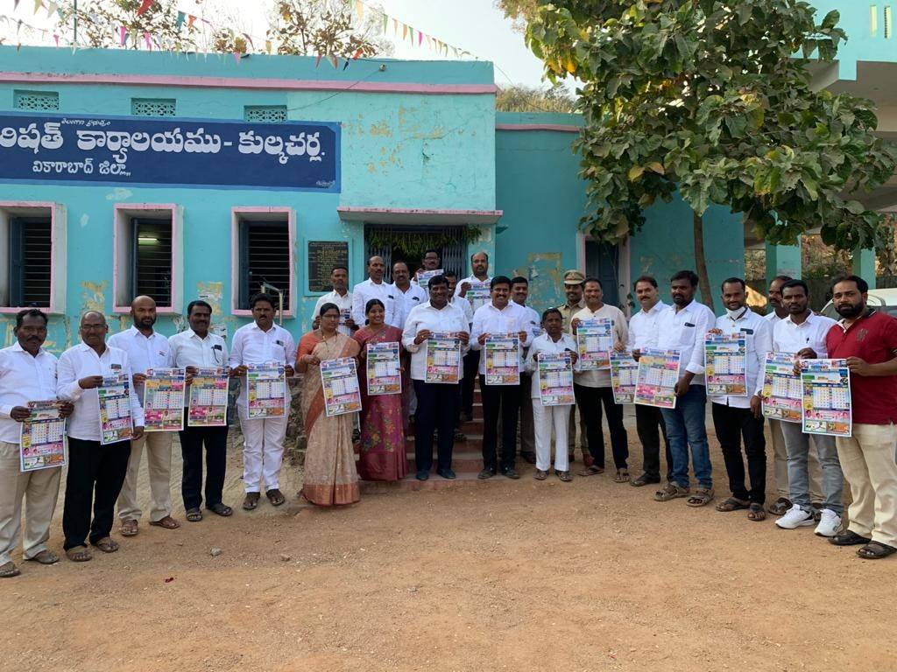
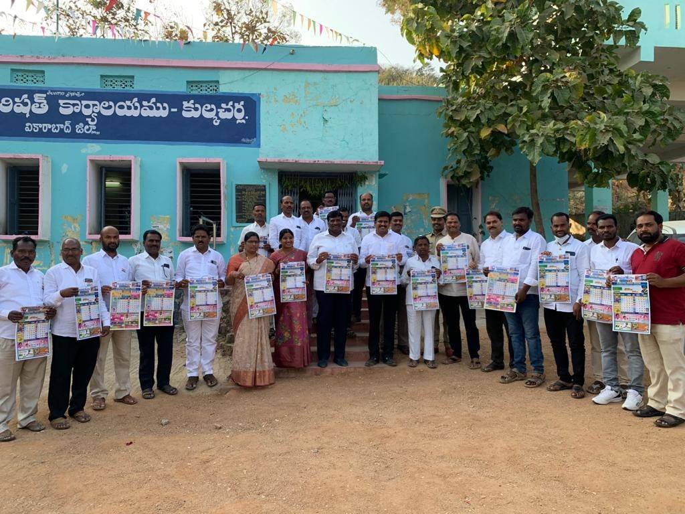

A village is generally spread over a small area. These are far away from the hustle-bustle of city life. There is much more peace and freshness in villages. The air is purer in the villages as they are not choked with traffic like the cities.
 

Kulkacharla Mandal has 29 grampanchayaths. A famous temple named Pambanda Rameshwaralayam is located 2 km from Kulkacharla.